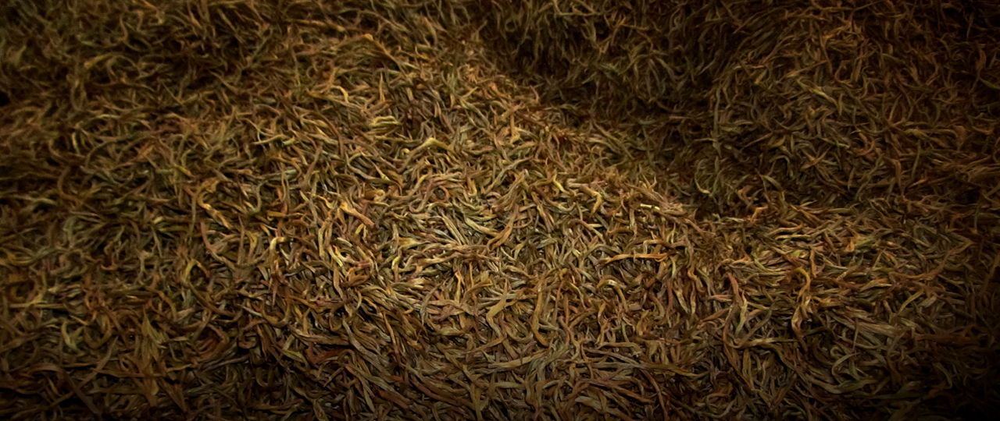

核心工艺
发酵俗称发汗，是指将揉捻叶呈一定厚度摊放于特定的发酵环境中，使芽叶中的多酚类物质，在酶促作用下产生
氧化聚合作用，其他化学成分亦相应发生深刻的变化，使绿色的茶坯产生红变，形成红茶的色香味品质。
滇红
非物质文化遗产项目
滇红茶制作技艺传承人
滇红茶叶科学研究院院长
发酵俗称发汗，是指将揉捻叶呈一定厚度摊放于特定的发酵环境中，使芽叶中的多酚类物质，在酶促作用下产生
氧化聚合作用，其他化学成分亦相应发生深刻的变化，使绿色的茶坯产生红变，形成红茶的色香味品质。
“尽管云南作为世界茶源之一，但滇红诞生较晚，好在它一面世就很惊艳，
这和凤庆大叶种的原料有关，也和不断突破的技术有关。
我有生之年的愿望就是希望通过技术的传承和创新，
不辜负上天赐予的好原料，让中国的红茶再一次扬名。
红茶是世界之茶，它里面一定不能缺掉滇红，否则就不完美。”